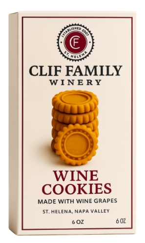
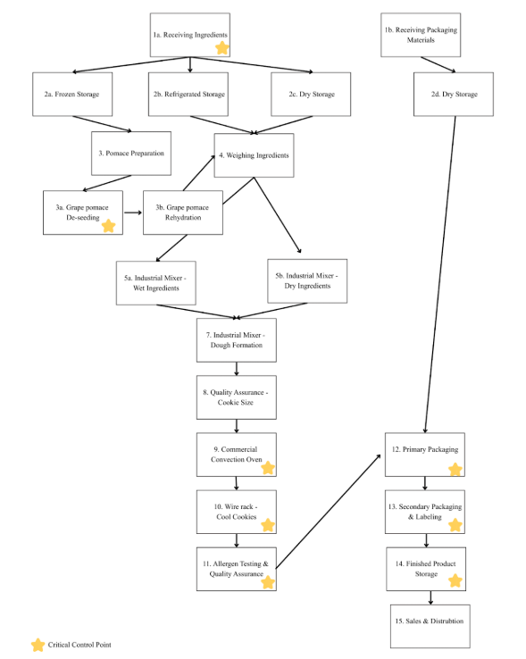

Vegetable Waste Valorization in Extrusion
Authored a technical manuscript investigating how to successfully incorporate vegetable waste (pomace) into extruded snacks. High-fiber waste streams typically cause severe structural failures in continuous-manufacturing lines; this research synthesized processing interventions to restore product expansion and texture.
The Starch-Protein-Fiber Conflict
Raw dietary fibers naturally disrupt the continuous starch-protein dough network inside an extruder. Through micro-mechanical analysis, the research identified two primary modes of failure:
- Insoluble Fibers (Lignin): Act as rigid, physical roadblocks that cut through the expanding dough matrix, resulting in dense, brittle products.
- Soluble Fibers (Pectin): Aggressively absorb moisture, starving the starches of the water needed to properly gelatinize and expand.
| Pomace Source | Physicochemical Impact |
|---|---|
| Carrot | High water-holding capacity; lignin acts as a physical wedge causing brittle matrices. |
| Grape | Tannins chemically bind to starches and proteins, severely limiting cellular expansion. |
| Beetroot | High pectin content rapidly scavenges moisture, altering the glass transition temperature. |
Formulation Interventions
Protein Hybridization (The "Glue")
Identified sunflower meal and pulse flours as vital crosslinking agents. The sulfur-containing amino acids in these proteins promote strong disulfide bonds.
↳ Functional Value: Acts as a "glue" to stitch the torn fiber-starch matrix back together, allowing the dough to stretch and puff uniformly exiting the die.
Micronization Pre-Treatment
Recommends physical disruption (superfine grinding) of the pomace prior to extrusion to drastically reduce the particle size of insoluble fibers.
↳ Functional Value: Converts rigid, abrasive fibers into smooth, functional hydrocolloids that reinforce the dough rather than puncturing it.

Source: Zhang, B., et al. (2021). Starch-based food matrices containing protein: Recent understanding of morphology, structure, and properties. Trends in Food Science & Technology.
Commercial Frozen Meal Kit Scale-Up
2026 RCA Competition Blueprint
Directed the cross-functional development of a Korean-Chinese fusion product engineered specifically for high-volume manufacturing, cryogenic freezing (IQF), and MAP environments.
Project Context: While this concept submission did not advance to the final competition round, the rigorous commercialization blueprint, continuous-line flowcharts, and matrix stabilization protocols developed stand as a robust, viable proof-of-concept for B2B frozen food manufacturing.
Protein 12 Mo.
Target Shelf Life
Matrix Stabilization
Chemical Leavening vs. Yeast Proofing (Bao Bun)
Utilized lactic acid from Greek yogurt to activate sodium bicarbonate, providing an immediate CO2 release to lift a heavy 12% upcycled carrot pomace load.
↳ Operational Value: Bypasses the manufacturing bottleneck of biological yeast proofing, which requires significant time and physical space on a factory floor.
Vacuum Protein Extraction (Seafood Binder)
Utilized vacuum tumbling (-0.8 bar) and a targeted potassium salt blend to extract myofibrillar proteins (actin and myosin) from the diced seafood.
↳ Functional Value: Creates a natural "meat glue" that holds the patty together through rigorous industrial rotary forming without relying on synthetic binders.
Sodium Reduction & Flavor Masking
Incorporated yeast extracts rich in 5'-ribonucleotides to trigger savory taste receptors, masking the metallic off-notes of potassium chloride to achieve a 50% sodium reduction.
↳ Operational Value: Flavors were encapsulated to prevent aromatic volatilization (flavor loss) during the 375°F industrial flash-frying step.
Shear-Thinning Rheology (Sauces)
Engineered a pseudoplastic (shear-thinning) sauce matrix using Xanthan Gum and FOS syrups.
↳ Functional Value: Ensures the sauce flows rapidly out of a high-speed factory filling nozzle, but instantly thickens up to cling to the hot cutlet on the consumer's plate.
Theoretical Factory Flow
-
Rotary Forming
Industrial formers extrude the sticky seafood emulsion into 85g patties at chilled temperatures (<38°F).
Why <38°F? Prevents the extracted proteins from denaturing prematurely before thermal processing.
-
Continuous Enrobing
Triple-stage waterfall enrobing line calibrated for a precise ~20% coating pickup.
Why 3 stages? Anchors the batter deeply to the protein to prevent "blow-off" inside the fryer.
-
Thermal Processing
Continuous frying (par-fry at 375°F) followed by a spiral convection oven to achieve a safe internal pasteurization temp (165°F).
-
MAP & Cryogenic IQF
Automated tray sealers backflush with 30% CO₂ / 70% N₂. A liquid nitrogen tunnel rapidly drops the core to 0°F.
Why Liquid Nitrogen? Fast freezing prevents large ice crystals from forming and rupturing the cellular structure of the food.


Clif Family Winery: Upcycled CPG Cookie
Developed a market-ready, gluten-free, and vegan wine-pairing cookie utilizing upcycled red wine grape pomace. Engineered the full commercialization strategy integrating a statistical Design of Experiments (DOE), a FSMA-compliant HACCP safety plan, and rigorous Cost of Goods Sold (COGS) evaluation to support a phased transition to internal production.
Fractional Factorial DOE 2^4-1
Executed 8 batch variations targeting structural integrity. Validated formulations using a Texture Profile Analyzer to measure hardness (20-30 N) and cohesiveness (0.5-0.6).
| Tested Variables | Optimized Formulation | |||
|---|---|---|---|---|
| % Pomace | % Water | % Sugar | Hydrocolloid | Winning Base |
| 5%, 10% | 2%, 6% | 17%, 22% | Aquafaba, Flax | 5% Pomace, 6% Water, 22% Sugar, Flax Egg |
Functional Ingredient Selection: The "Flax Egg"
Mimics egg albumen to provide structural elasticity.
↳ Operational Value: Prevents the cookie from crumbling on high-speed packaging lines.
FSMA-Compliant HACCP Architecture
Biological Kill Step
Convection bake to achieve a minimum internal temperature ≥ 165°F (74°C) to neutralize pathogens.
Physical Hazards
Manual and visual sifting of grape pomace to remove stems, sticks, or stones prior to processing.
Allergen Management (Soy)
Vegan butter requires strict soy declaration[cite: 182]. SSOPs mandate allergen swabbing to confirm < 5ppm residue.

Physical Prototype: Finalized gear-stamp design developed to align with Clif Family’s cycling heritage.
↳ Functional Value: Validated that the flax-egg hydrocolloid matrix maintains sharp definition under industrial convection heat.

Sensory Analysis: 9-point Hedonic and JAR scaling confirming Batch 1 exceeded target 66% "Just-About-Right" scores.
↳ Operational Value: Statistical proof of consumer palatability prior to regional co-packer transition.

Technical Blueprint: Integrated HACCP process flow covering unit operations from raw pomace sifting to MAP packaging.
↳ Operational Value: Defined strict CCPs to ensure FSMA compliance across Biological, Chemical, and Physical hazards.
Systems Engineering & Operational Optimization
Applying Lean manufacturing principles and sanitary design protocols to maximize throughput, ensure safety, and eliminate process waste.
High-Volume Production Line Optimization
Applied Lean methodology and Value Stream Mapping to resolve severe production bottlenecks at Woodstock's Pizza, enabling the line to sustain a peak throughput of 100 units/hour.
-
Line Balancing
Reallocated labor and standardized cheese portions via volumetric measuring to drop station cycle time from 45s to 30s.
-
Visual Controls (Kanban)
Engineered an ingredient fill-line Kanban system and "Rush-Prep Checklist" to eliminate cross-station motion waste.

Commercial Yogurt Facility QA Blueprint
Engineered a comprehensive, FSMA-compliant 7-acre facility layout for high-volume yogurt processing, prioritizing environmental pathogen control.
Kill step validation to eliminate Listeria and Salmonella risk.
-
Hygienic Zoning Map
Established physical separation and positive air-pressure gradients between Raw (Zone 4) and High-Care (Zone 1) packaging areas.
-
Sanitary Architecture
Specified coved floor-to-wall junctions and sloped trench drains to prevent microbial harborages and moisture accumulation.